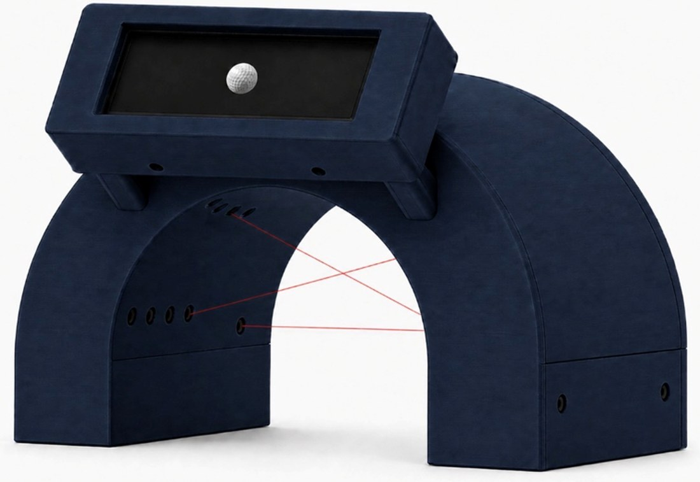

Measure•Analyse•Customise
Putt Like the Best on Tour
Portable Practice. Measured Progress.
Every putt measured. Every session spent where your strokes gained putting needs improvement.
Strokes gained starts on the green.
The putter is the most used club in the bag. Putting accounts for around 40% of your score, yet it is the least practised part of the game. That combination makes it the easiest place on the course to gain strokes.
For the professional, your final position depends heavily on how you putt on the day. A single stroke can win the tournament, make the cut or keep your tour card. Focused practice is where those fine margins are won.
Putting well comes down to three fundamentals, whatever your standard. ShiHAN Putting Lab measures these rather than dissecting your stroke. Of the three it identifies speed as king, because the pace you choose decides the line you can take.
Improve all three and your strokes gained putting goes up.
Measure. Analyse. Customise.
Measure
The ShiHAN ARCH captures speed and start line on every putt, and where space is short, calculates the roll out for the green speed and slope you have set.
Analyse
Your results are benchmarked against golfers at your level using strokes gained methodology, showing make probability and three-putt risk.
Customise
Your practice is built around where your strokes gained putting is weakest, and adapts each session as your numbers improve.
The heart of the system.

The ShiHAN ARCH. Design shown is indicative.
The ARCH is a self-contained instrumentation hub. It is portable, so it works indoors in confined spaces as well as out on the practice green.
Start line is measured in fractions of a degree, and moving the datum start point changes the tolerances.
- Three modes, up to Pro.
- Select the mode for your level or objective.
- Speed and start line captured on every putt.
- Roll out calculated for green speed and slope.
- Stroke length and tempo trained to known distances.
- Real-time feedback on the integral display.
- Over two hours of practice between charges.
- Connects to the app when you want more.
Practice where it counts.
Not every putt is worth the same amount of practice. ShiHAN divides the green into three zones and sets how much of your session goes into each, so your time is spent where the strokes actually are.
Make Zone
Hole more first putts. The right pace widens the effective hole.
Save Zone
Eliminate the three putt. From here it is pace that saves you.
Bonus Zone
A free hit at the first putt, with a two putt virtually guaranteed.
Your zones are calculated by a proprietary ShiHAN formula applied to industry recognised performance data, so they are set correctly for your mode before you have hit a putt. As the app builds a picture of your own putting, the same formula works on your numbers instead, and the zones become yours rather than your mode's.
As a Pro you can override all of it. Heading into a competition you already know what needs work, and what the course is about to ask of you, so you can weight the zones accordingly in advance. A week on the Old Course with those double greens will almost certainly result in a fifty foot putt for an eagle on one of the par fives.
Choose your standard.
There are three modes. Each defines what counts as a successful putt, and the ARCH judges every attempt against that standard. As you move up, the putts get longer, the slopes get real and the tolerances tighten.
Game Improvement
For the golfer whose card is ruined by three putts and short putts missed. Practice is focused on flat putts over the distances you face most often, with pace and start line measured on every one, so you know which of the two cost you the putt.
Competitor
For the golfer who plays medals and matchplay and wants to stop giving shots away on the green. Practice brings slopes into play, and you find out the reason for the miss. Strokes gained putting is the difference between a good medal and a winning one, between club champion and runner up.
Pro
For the player whose misses are already close. Tight tolerances, real slopes and no help setting up: you choose the conditions, the ARCH tells you whether you delivered them. At this level the difference between a good week and a bad one is half a degree and a foot of pace.
Complete on its own. Two levels further with the app.
The ARCH is a complete, self-contained portable training aid. The app is there when you want your practice taken further, at whichever level suits you.
On its own
Choose your mode and conditions, and the ARCH does the rest. It sets the target, measures every putt and tells you how you performed, session after session.
No subscription.
Train
The same putts, taken further.
- Analysis. Make probability and three-putt risk, tracked session to session.
- Customisation. Zone weightings that move as your numbers move.
- Metronome. A consistent tempo to putt to.
- Green reading guidance. Slope and break measured as you practise, so the knowledge transfers to the course.
Subscription based. Pricing at launch.
Coach
Everything in Train, plus an AI coach that knows how you putt. Your own ShiHAN.
- Personal coaching. Advice shaped around the weaknesses your own numbers reveal.
- Mindset. How to settle over the ball, commit to the line and move on from a miss.
- Always available. Ask a question mid-session and get an answer that knows your numbers.
Subscription based. Pricing at launch.
A realistic objective.
The aim is simple: increase the probability of holing every first putt while reducing the probability of three putting. These are the target results for golfers training with the system.
Shots gained
For a professional over a 72-hole competition.
Shots gained
For a 20 handicap golfer over an 18-hole round.
A reward worth playing for.
The Eagle Putt.
A limited edition release of individually numbered bottles, available exclusively to ShiHAN Putting Lab subscribers.
Full details closer to launch.
Your own putting master.
師範
ShiHAN is the Japanese term for a master teacher: the one who sets the standard, watches closely and tells you exactly what to work on next. That is what the system is built to be.
Measure, analyse and customise your training, with your own putting master by your side.
Start a conversation.
We are always glad to hear from golfers, coaches, clubs and manufacturers. Whether you want to follow the development of the system or talk about being part of the trials, get in touch.
Andy Hill: andy@standrewsdynamics.com
Bill McKinley: bill@standrewsdynamics.com